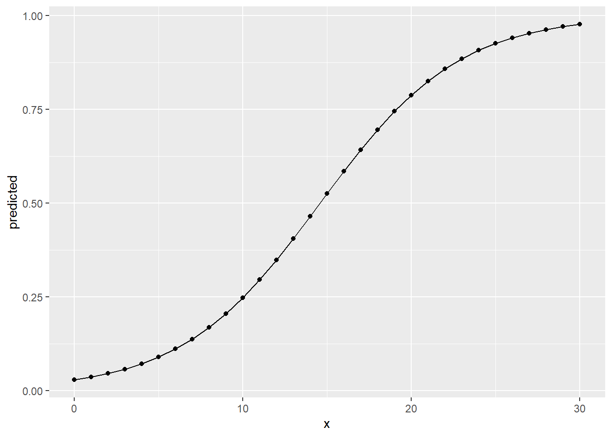
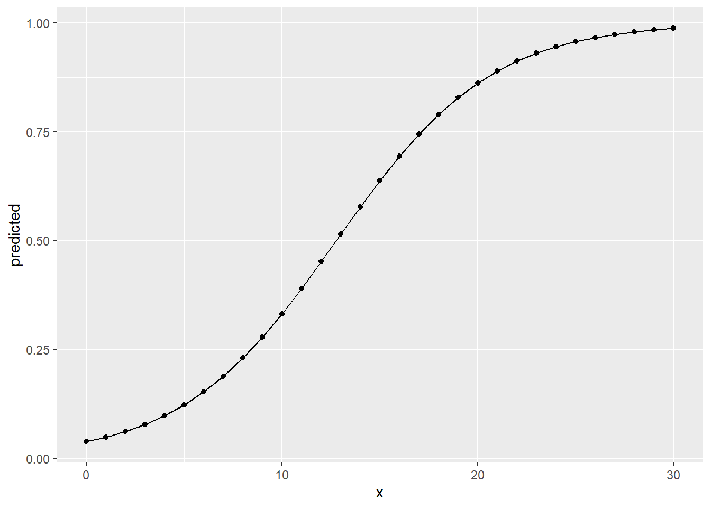
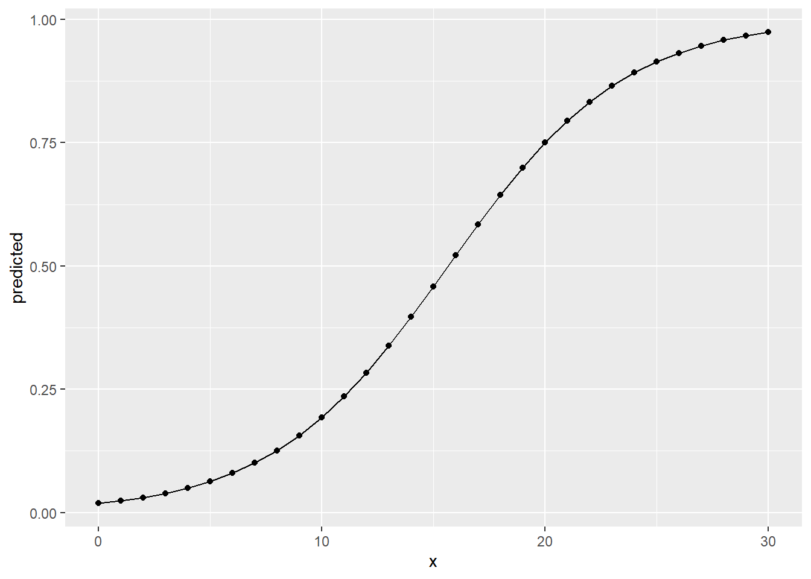

13 Logistic regression
For most of this course we were concerned with modelling our data using linear regression. There are many other modelling approaches that all have their pros and cons and that are suited to different empirical problems and types of data. While we do not have the time and space to tackle them all, in this session we want to introduce one alternative technique, namely logistic regression.
13.1 Objectives
- Understand the underlying concept of logistic regression
- Apply logistic regression and interpret the results
- Assessing the model fit for logistic regressions
13.2 Functions covered in this week
glm(): Base R function used to fit a generalized linear model to the data. It takes a formula that specifies the dependent and independent variables, a data frame that contains the variables, and a family argument that specifies the type of model, such as “binomial” for logistic regression. It returns a model object that can be used for further analysis.- Converting Logits into probabilities
ggpredict(): Function from the ggeffects package. It is used to compute predicted probabilities and their confidence intervals for different types of models in R. It takes a model object and one or more arguments that specify which variables and which of their values to predict for.margins(): Function from the margins package. It is used to compute average marginal effects for various types of models in R. It takes a model object and other arguments that specify the variables of interest, the type of marginal effects (response or link), etc.
- Assessing the model fit
r2_mcfadden(): Function from the performance package. It is used to compute McFadden’s pseudo \(R^2\) for generalized linear models in R. It takes a model object and returns McFadden’s \(R^2\) and adjusted \(R^2\) values.model_performance()&compare_performance(): Functions from the performance package. Used to compute various indices of model performance for different types of models in R. It takes a model object and other arguments that specify which indices to include or exclude, among them AIC, BIC, RMSE, and several more.compare_performance()does the same for multiple models at once.
13.3 What is logistic regression?
Logistic regression in many ways is similar to linear regression. We will not go into the mathematical details of it all, as we have done for linear regression, and rather focus on the two main differences that are of central importance to us when starting out using logistic regression models.
The first main difference is that logistic regression is tailored to binary outcome variables while linear regression is used to model continuous variables. Binary variables only have two levels. For example includes dummy variables, which can only have the values \(1\) or \(0\). Either an observation has a certain characteristic or it does not. If we think about our NBA data, all position variables we created are of this type. Other examples would be the (binary) gender of an observation, with the two levels “male” and “female”, or, returning to our NBA data, the playing hand, either “left” or “right”.
The second main difference is the estimation method used in computing the model. Again, we will not go into the details of it all, but it is important to get a sense of the difference of how both approaches fit their models. Rather than fitting a straight line through data points as in linear regression, logistic regression fits a “s-shaped” line. This line represents the probability of an observation being in either category. As you can see below the left and right ends of this line get progressively flatter approaching \(0\) and \(1\) respectively. This means that the probabilities the model assumes can never fall below \(0\) or rise above \(1\). This is important as we can be \(0\%\) to \(100\%\) certain that an observation has a certain value but we can never be \(-20%\) or \(120\%\) certain, as this would violate the mathematics of probability.

As the line is fitted differently, the estimation method also has to be different. While linear regression uses ordinary least squares (OLS), i.e. using the distance from each observation to the regression line, logistic regression uses the maximum likelihood function to approximate the s-shape curve which best fits the data. Basically the algorithm “tries out” different s-shaped curves by trying different coefficients for the independent variables in the model. For each proposed line the likelihood of it describing the actual observed values can be calculated. In each iteration of the algorithm the coefficients are changed in a way that tries to increase the likelihood until one curve is found that maximises this value, that is why it is called maximum likelihood function. The resulting curve and its coefficients are the best fit when computing a logistic regression.
See this youtube playlist on logistic regression for more details.
13.4 Logistic regression in R
Having a map of the basics, we can now start applying a logistic regression to our NBA data. Let us load the prepared data first.
Over the last sessions we were interested in the relationship between
the points scored and the salary received. We found out that there is a
positive relationship between those measures. But we also saw, that the
range of possible values for salary for each value of career_PTS was
still very broad. In other terms, while the increase in points per game
could in part explain the increase in monetary reward, there were still
some wages that were inexplicably high. We will here use a logistic
regression and try to shed some more light on these extremely high
salaries and their relationship to the points scored as our central
measure of performance. Does scoring more points increase the chance of
being among the high earners and to what extent?
13.4.1 Preparing the outcome variable
To approach this we have to change our outcome variable. Instead of
using the actual salary in dollars, we are now interested in the
question if an observation belongs to the high earners or not. We have
to build a variable that reflects this. But what constitutes a high
earner? This is a definition we have to make and that is necessarily
somewhat arbitrary. As we lack any theoretical claims of what
constitutes a high earner and we do not want to pick a number “out of
the blue”, one approach would be to inspect the distribution of salary
and choose a sensible cutoff based on it.
## Min. 1st Qu. Median Mean 3rd Qu. Max.
## 2706 947907 2240000 4072633 5408700 34682550We could for example state that belonging to the top \(25\%\) constitutes
being a high earner. The salary value that is the cutoff between the
lower \(75\%\) and the higher \(25\%\) is the third quartile, i.e.
\(5,408,700\$\). We can now build a new binary variable that discerns both
groups. Below we assign the value 1 to every observation that has a
salary above the threshold and 0 to everyone else. We also save the
new variable as a factor variable, the representation of categorical
variables in R. A binary variable is simply a categorical variable with
two categories.
13.4.2 Running a logistic regression in R
Running a logistic regression in practice is not that different to
running a linear regression; but while we have used the lm() function
for a linear regression, “lm” stands for “linear model”, we have to use
something else for a logistic regression.
Logistic regression is part of the family of generalised linear models,
which for example also includes the Poisson regression for count data or
the ridge and lasso regression which apply feature selection. The
function glm(), short for generalised linear model, gives us access
to several models from this family, including logistic regression. We
have to specify our model formula in the same way we did with lm() and
the data to be used. The additional argument family = binomial
specifies that we want to run a logistic regression. See ?family for
an overview of other glm models and how to choose them.
13.4.3 Interpretation
Using summary() on the model object, we see a familiar output.
##
## Call:
## glm(formula = high_earner ~ career_PTS, family = binomial, data = data_nba)
##
## Deviance Residuals:
## Min 1Q Median 3Q Max
## -2.7513 -0.6415 -0.4421 -0.2395 2.4894
##
## Coefficients:
## Estimate Std. Error z value Pr(>|z|)
## (Intercept) -3.537508 0.069377 -50.99 <2e-16 ***
## career_PTS 0.242502 0.005948 40.77 <2e-16 ***
## ---
## Signif. codes: 0 '***' 0.001 '**' 0.01 '*' 0.05 '.' 0.1 ' ' 1
##
## (Dispersion parameter for binomial family taken to be 1)
##
## Null deviance: 10929.8 on 9727 degrees of freedom
## Residual deviance: 8653.8 on 9726 degrees of freedom
## AIC: 8657.8
##
## Number of Fisher Scoring iterations: 5The model fit block, the last few lines of the output, actually do look different to what we have seen before. The last line tells us how many iterations the algorithm used to come to a solution, in this case \(5\). The remainder of the model fit block gives us measures on the quality of the model, but we will use a different measure for this later on. So let us focus on the coefficients for now.
13.4.3.1 Logits
While the coefficients are presented in exactly the same way as for a linear regression, the interpretation is completely different. In a linear regression, coefficients are interpreted as the change of the value of \(y\) for a one unit increase in \(x\). But what is our \(y\) variable now? It is not a metric variable that can increase or decrease on its scale, it is a binary variable that can, in our case, have the values \(1\) or \(0\) and nothing in between. So what the coefficients in a logistic regression show us is the change in the probability that \(y = 1\) for a one unit increase \(x\). This change is shown as log odds or logits.
The intercept tells us that the basic probability of being a high earner
is \(-3.537508\) expressed in log odds, and the coefficient for career_PTS
tells us that for every point scored these log odds increase by
\(0.242502\). Is this helpful? Not really. Log odds are hard to interpret
directly. All we can actually do with them is to interpret the sign. Is
an effect positive or negative? If we had multiple independent
variables, we could also compare the size of the effects to each other.
A larger log odd means a larger change in probability of \(y = 1\). While
we can do this, we have to be careful. We can say that one effect is
larger but it is hard to state by how much. As log odds are on a
logarithmic scale, we can not interpret a log odd of \(0.5\) as being
twice as high as \(0.25\).
As log odds are notoriously hard to deal with directly, in practice no one really interprets them beyond the direction of an effect. But there are several different ways to transform log odds into measures that are more meaningful to us.
13.4.3.2 Odds Ratios
One of these approaches is inspecting the odds ratios. As log odds are
actually the logarithmised odds ratios, we can transform them into odds
ratios using exp(). Below we first extract the coefficients from the
model object using coef() on it and then take the exponential of the
coefficients transforming them into odds ratios.
## (Intercept) career_PTS
## 0.02908571 1.27443331The odds ratio for career_PTS of \(1.27\) tells us that for each
additional point scored the odds of being a high earner increase by this
value. A odds ratio of \(1\) would indicate no change. The odds change by
a factor of \(1\), i.e. not at all. Odds ratios below \(1\) indicate a
decrease, above \(1\) an increase.
There is an alternative tidyverse way to get odds ratios using the
broom package. It neatly converts the output into a tibble which makes
it easier to work with.
## # A tibble: 2 × 5
## term estimate std.error statistic p.value
## <chr> <dbl> <dbl> <dbl> <dbl>
## 1 (Intercept) 0.0291 0.0694 -51.0 0
## 2 career_PTS 1.27 0.00595 40.8 013.4.3.3 Probabilities
Recently, it has become more common to convert the coefficients into
probabilities, as these can be easily interpreted in a meaningful way.
There are various packages and various options and
no clear agreement on what is the preferred output. Documentation for
the ggeffects
package and the
margins package capture this
discussion in detail. In the following, we will show you how to compute
predicted probabilities and average marginal effects (AME).
Predicted probabilities are very straightforward. Remember what we are
interested in when running a logistic regression, the probability of
\(y = 1\) given the values of one or multiple independent variables.
Predicted probabilities give us just that. While we could compute them
manually, we spare you the formula this time and instead use
ggpredict() from the ggeffects package. All we have to give the
function is the model object and the names of one or multiple
independent variables we are interested in.
## # Predicted probabilities of high_earner
##
## career_PTS | Predicted | 95% CI
## -------------------------------------
## 0 | 0.03 | [0.02, 0.03]
## 5 | 0.09 | [0.08, 0.10]
## 10 | 0.25 | [0.24, 0.26]
## 15 | 0.52 | [0.51, 0.54]
## 20 | 0.79 | [0.77, 0.81]
## 25 | 0.93 | [0.91, 0.94]
## 30 | 0.98 | [0.97, 0.98]The output gives us the predicted probability of being a high earner for
a selection of values for career_PTS. For example for a player that
scores \(15\) points on average the model assumes a probability of \(52\%\)
of being a high earner, basically a slightly biased coin flip. Looking at
particularly low and high scorers, we can see that the probability dramatically
de- or increases. A player who scores \(10\) points per game only has a
probability of being a high earner of \(25\%\) while a player who scores
\(20\) already has a very high probability of \(79\%\). The nearer we get
to the extreme values of career_PTS, the less dramatic the in- and
decrease gets. The relationship between points per game and the
predicted probability is non-linear!
We can visualise this using ggplot(). Here we also tell ggpredict()
to give us predictions for all values of career_PTS between \(0\) and
\(30\).
ggpredict(model_logit_1, "career_PTS [0:30]") %>%
as_tibble() %>%
ggplot(aes(x, predicted)) +
geom_point() +
geom_line()
This looks familiar. It is the s-curve fitted to the data in a logistic
regression we have seen above. The closer we get to the extreme values
for career_PTS, the flatter the line gets, nearing \(1\) and \(0\)
respectively but never dipping above or below these values.
Modelling the relationship between independent and dependent variables as non-linear is inherent to logistic regressions and also one of its advantages. But this also means that it is not straightforward to describe the change in probability with one coherent measure. One popular way to approach this is calculating the average marginal effect (AME). As we have seen, the slope of the s-shape curved differs over its range. In the middle it is steeper, at the fringes it gets less steep. AMEs give us the average slope over its complete range. We can interpret this as average change in probability for \(y\) occurring for a one unit increase in \(x\).
The function margins() from the margins package can be used to compute AMEs.
Besides the model object, we also have to specify which variables we are
interested in. summary() is used to give us a nicely formatted output with
additional information on the uncertainty of the calculated AME.
## factor AME SE z p lower upper
## career_PTS 0.0344 0.0006 59.7946 0.0000 0.0333 0.0355The AME for career_PTS is \(0.0344\). This means that for every
additional point per game, the NBA players are about \(3.5\) percentage
points more likely to be among the high earners.
What do we learn from all of this? There is a strong positive relationship between points scored and the chances of being a high earner. Starting from \(15\) points per game on average the probability rises above \(50\%\). Really high scorers, maybe scoring \(20\) and more, have really high chances of being a high earner, low scorers have a really low chance.
This makes sense, but up till now, we have not included other control variables in our model. Maybe these will change the relationship we have observed.
13.5 Building a better model
To keep things simple here, we can assume the data generating process for being a high earner to be the same as for the salary in general. This would imply that we have to include the position a player occupies as our sole control variable.
We can do this in glm() the same way as we have done in lm().
model_logit_2 <- glm(high_earner ~ career_PTS + position_center + position_sf + position_pf + position_sg + position_pg,
data = data_nba,
family = binomial)
summary(model_logit_2)##
## Call:
## glm(formula = high_earner ~ career_PTS + position_center + position_sf +
## position_pf + position_sg + position_pg, family = binomial,
## data = data_nba)
##
## Deviance Residuals:
## Min 1Q Median 3Q Max
## -2.7356 -0.6312 -0.4305 -0.1778 2.3902
##
## Coefficients:
## Estimate Std. Error z value Pr(>|z|)
## (Intercept) -4.101017 0.106782 -38.406 < 2e-16 ***
## career_PTS 0.253238 0.006216 40.739 < 2e-16 ***
## position_center 0.866756 0.086616 10.007 < 2e-16 ***
## position_sf 0.234690 0.075762 3.098 0.00195 **
## position_pf 0.193818 0.070319 2.756 0.00585 **
## position_sg -0.038478 0.072682 -0.529 0.59652
## position_pg 0.135863 0.088297 1.539 0.12388
## ---
## Signif. codes: 0 '***' 0.001 '**' 0.01 '*' 0.05 '.' 0.1 ' ' 1
##
## (Dispersion parameter for binomial family taken to be 1)
##
## Null deviance: 10929.8 on 9727 degrees of freedom
## Residual deviance: 8432.7 on 9721 degrees of freedom
## AIC: 8446.7
##
## Number of Fisher Scoring iterations: 5We still see a clear positive effect of points scored, the chances of
being a high earner rising with each additional point. Please note that while
the coefficient is somewhat larger compared to our first model, we can
not directly compare coefficients between two logistic models. For an in depth
discussion, see the paper by Carina Mood as well as the proposed solution by
Karlson, Holm & Breen (KHB) under “Further resources” below. This is of special
importance when conducting mediation analysis with logistic models, as this is
all about comparing coefficients between models. The KHB method is
also implemented in R, for example in the khb package.
We also see that centers have considerably higher chances for being high earners while the chances for short and power forwards are also increased but substantially less so. The effect for point guards is also positive but smaller and not statistically significant. The effect for shooting guards is very near to \(0\) and also not statistically significant.
13.5.1 Model fit
But is our second model “better” compared to the first one? Does it better describe the variation in the outcome variable by the values of the independent variables? For this question we have to turn to measures of model fit again.
For linear regression, a popular measure for the model fit is the \(R^2\) which reports the “percentage of variance in \(y\) which is explained by the model”. For logistic regression, we can not directly compute \(R^2\). There are dozens of ways to calculate different approximations to \(R^2\) for logistic regressions with no consensus on what the best measure is. It’s complicated. A more in-depth technical discussion can be found here.
For this session we will again keep it simple and focus on McFadden’s pseudo \(R^2\) without going into the details of its computation. All we have to know for now is that the measure can not be interpreted as “percentage of variance” explained but that we can still use it as a tool for comparison. Larger values are better than smaller values.
One way to compute model performance measures is the performance
package. The function r2_mcfadden() returns McFadden’s pseudo \(R^2\)
for our model. Note that there are other measures available from the
package. For starters, model_performance() returns a number of them
while compare_performance() returns them for multiple models at the
same time in one table.
## # R2 for Generalized Linear Regression
## R2: 0.208
## adj. R2: 0.208## # R2 for Generalized Linear Regression
## R2: 0.228
## adj. R2: 0.228The measure is higher for our second model. As we can not really interpret McFadden’s pseudo \(R^2\) beyond “the more, the better”, we can conclude that the second model performs better compared to the first.
We have to keep in mind that the same caveats apply as with \(R^2\) in linear regressions. Just aiming for a higher model fit does not necessarily lead to a more correct model. Again we need to invest the time into thorough thinking and making well founded and sensible decisions to achieve an estimate for our effect of interest with as little bias as possible.
13.5.2 Interpretation
To get a better understanding of the results from model 2, we should
again transform the coefficient for career_PTS into probabilities,
separately for centers and point guards. We can again use ggpredict()
to compute the predicted probabilities but this time we have to also
supply values for our control variables using the argument control. If
we do not do this, all other variables are set to their mean values.
This can make sense for metric variables, representing the average,
but it does not make sense for binary variables. What would
position_center = 0.31 mean? Nothing really as a player can either
play as a center or not, i.e. have the value \(1\) or \(0\) and nothing in
between.
ggpredict(model_logit_2, "career_PTS",
condition = c(
position_center = 1,
position_sf = 0,
position_pf = 0,
position_sg = 0,
position_pg = 0
))## # Predicted probabilities of high_earner
##
## career_PTS | Predicted | 95% CI
## -------------------------------------
## 0 | 0.04 | [0.03, 0.04]
## 5 | 0.12 | [0.11, 0.14]
## 10 | 0.33 | [0.30, 0.36]
## 15 | 0.64 | [0.60, 0.67]
## 20 | 0.86 | [0.84, 0.88]
## 25 | 0.96 | [0.95, 0.97]
## 30 | 0.99 | [0.98, 0.99]ggpredict(model_logit_2, "career_PTS",
condition = c(
position_center = 0,
position_sf = 0,
position_pf = 0,
position_sg = 0,
position_pg = 1
))## # Predicted probabilities of high_earner
##
## career_PTS | Predicted | 95% CI
## -------------------------------------
## 0 | 0.02 | [0.02, 0.02]
## 5 | 0.06 | [0.05, 0.07]
## 10 | 0.19 | [0.17, 0.21]
## 15 | 0.46 | [0.42, 0.49]
## 20 | 0.75 | [0.72, 0.78]
## 25 | 0.91 | [0.90, 0.93]
## 30 | 0.97 | [0.97, 0.98]Comparing the predicted probabilities for centers and point guards, we can see that centers have a considerably higher probability of being a high earner if they score the same amount of points as a point guard. A center that scores \(15\%\) points per game has a predicted probability of \(64\%\), a point guard that scores the same has only \(46\%\). Centers also reach very high probabilities with considerably less points.
We can again visualise this, using predictions over the range \(0\) to \(30\) points scored per game, separately for both positions.
ggpredict(model_logit_2, "career_PTS [0:30]",
condition = c(
position_center = 1,
position_sf = 0,
position_pf = 0,
position_sg = 0,
position_pg = 0
)
) %>%
as_tibble() %>%
ggplot(aes(x, predicted)) +
geom_point() +
geom_line()
ggpredict(model_logit_2, "career_PTS [0:30]",
condition = c(
position_center = 0,
position_sf = 0,
position_pf = 0,
position_sg = 0,
position_pg = 1
)
) %>%
as_tibble() %>%
ggplot(aes(x, predicted)) +
geom_point() +
geom_line()
Overall the results from the linear regression for salary and the
logistic regression for high_earner tell the same story. The more
points per game a player scores on average, the higher the monetary
compensation they receive is estimated. But the relationship is not the
same over the positions players can occupy. A point guard really has to
deliver on those to be among the high earners, a center can reach
these levels of salary with fewer points. Scoring points is not as
central, no pun intended, for centers as it is for point guards. Both
positions fill different roles and centers have other tasks on the field, for
example blocking players and making rebounds. Maybe we should have included
additional performance measures as control variables to get a more accurate
estimate for our effect of interest. There is also the possibility that there
are some unobserved characteristics that discern high earners from those who are
not, e.g. the already alluded to “star power”.
We have to conclude this introduction to data analysis at this point. While we were able to build models that could estimate our effect of interest, there is still room for improvement. We hope that this course has given you all the tools you need to conduct your own projects and improve on ours!
13.6 Additional pointers
Before we leave you to it, we will you give you some additional pointers for logistic regression that could not be covered in full for this session.
13.6.1 Predicting hypotheticals
We have actually already covered how we can make predictions based on a logistic
regression. This is what predicted probabilities are!
But we could also approach this as we have done before, constructing
a new tibble with data on hypothetical players and then using predict() to
receive the predictions. Just be sure to add the argument type = "response" to
predict() to actually receive probabilities.
13.6.2 Diagnostics
Logistic regression and linear regression share some of the same assumptions, e.g. on linearity, outliers and multicollinearity. Still, testing model assumptions and performing diagnostics somewhat differs between both approaches. For instance, many diagnostics we have seen for linear regression revolve around analyzing the residuals. In the context of logistic regression, given that the predicted values are probabilities and the actual values are either \(0\) and \(1\), it is not very clear what residuals mean.
We will not cover diagnostic tests for logistic regression in this course but
still wan to give you some pointers.
A deep dive into the topic can be found
here.
A simple approach to actually apply the diagnostics could be the function
check_model() from the performance package.
13.6.3 Comparing linear and logistic regression
As we have seen above, logistic regression can cause many headaches because assessing the model fit, testing diagnostics, prediction and diagnostics are all comparably complicated to perform and interpret.
One alternative to conducting a logistic regression on a binary outcome is to just apply a linear regression to it. In this case we are talking about a linear probability model (LPM). The coefficients from a LPM show us the increase in probability for \(y = 1\) for a one unit increase in the \(x\) variables. This is comparable to the AMEs from a logistic regression.
Let us reinspect them for our second model and then compare them to the coefficients from the same model computed as an LPM.
## career_PTS position_center position_sf position_pf position_sg position_pg
## 0.03487 0.1194 0.03232 0.02669 -0.005299 0.01871# coefficients from a linear regression (LPM)
lm(as.numeric(high_earner) ~ career_PTS + position_center + position_sf + position_pf + position_sg + position_pg,
data = data_nba) %>%
coef()## (Intercept) career_PTS position_center position_sf position_pf
## 0.827792872 0.041923758 0.115477249 0.021766019 0.027272863
## position_sg position_pg
## -0.013857610 0.002697281As we can see, the average marginal effects calculated based on the logistic regression model are relatively similar to the linear regression coefficients, differing more strongly for some variables than they do for others. While differences exist, the substantial conclusions we would draw from the LPM are the same as from the logistic regression. At the same time, when our aim is to estimate an effect with as little bias as possible, we would still prefer the logistic regression for this case.
For other cases, the differences between both approaches may be minimal. This mainly depends on the range of probabilities we are looking at. As a rule of thumb, many researchers consider using an LPM when the probabilities are relatively close to \(50\%\). It is easier to apply, easier to interpret and the results are very similar in logistic regression in these cases. When the probabilities are more extreme, the results tend to differ more strongly. Also in these cases a linear regression could predict values higher than \(100\%\) or lower than \(0\%\), which of course should not be possible.
In our case, about \(25\%\) of players belong to the high earners. We are working with relatively low probabilities of belonging to this group from the outset. This is why the results somewhat differed between both approaches. If we would have chosen a cutoff that splits the sample in two equally large and thus probable groups, i.e. the median, the results may have been more close. If we would have chosen a more extreme cutoff, e.g. the top \(10\%\), the results would differ even more. This again underlines the importance of EDA and understanding your data to make a sensible decision on the model used.
For a more in-depth discussion see here.
13.6.4 Logistic regression in Machine Learning context
In an earlier session we introduced you to using supervised machine learning for regression problems. Another common usage are classification problems, predicting whether an observation belongs to a certain category or not. You should be able to see the connection to logistic regression which is actually one of the algorithms used for these kinds of problems.
There are many alternatives to using a “pure” logistic regression, e.g. the lasso, ridge and elastic-net flavours of logistic regression, and many other algorithms that can also perform classification, e.g. random forests, support vector machines or naive bayes.
The general approach to machine learning we have seen before would be the same,
only that we have a binary outcome, may use a different algorithm and set the
mode to “classification”. The central difference is the way we assess the
models’ performance. Previously, we have used the RMSE to
evaluate how good the predictions were. We can not use this for
models with binary outcomes, since there are no “residuals” in the
classical sense. Instead, a common metric for assessing model performance
is “accuracy” and related measures like sensitivity and specificity.
All of these measures are based upon comparing the predicted and actual
categories of the outcome variable. Accuracy for example measures the percentage
of the actual values that are correctly predicted by the model. Keeping with
our example all high-earners and non-high-earners that are correctly predicted
would increase the accuracy and all wrong predictions would decrease it.
There are obviously more differences and accuracy should never be used as the sole measure of performance, but we hope to have given you some pointers that you can expand on, for example by training a machine learning model to predict being a high earner in the NBA.
13.7 Further resources
- Logistic Regression Essentials in R: This is a web page that introduces the basic concepts and techniques of logistic regression in R. It covers topics such as model assumptions, diagnostics, odds ratios, marginal effects, and model comparison. It also provides examples of applying logistic regression methods to real-world data sets.
- Logistic Regression in R Tutorial: This is a web page that provides a step-by-step tutorial on how to perform logistic regression in R using both base-R and tidymodels workflows. It also shows how to interpret the model output, assess model performance, and make predictions.
- How to Use predict() with Logistic Regression Models in R: This is a web page that shows how to use the predict() function in R to make predictions from a fitted logistic regression model. It also explains the difference between type = “response” and type = “link” arguments, and how to use new data for prediction.
- Mood, Carina (2009). Logistic Regression: Why We Cannot Do What We Think We Can Do, and What We Can Do About It. European Sociological Review, 26(1), 67-82.: In this influential article, Carina Mood explains why we can not interpret logits and odds ratios as direct measures of an effect and can not directly compare them between models.
- Karlson, Kristian Bernt, Anders Holm & Richard Breen (2012). Comparing Regression Coefficients Between Same-sample Nested Models Using Logit and Probit: A New Method. Sociological Methodology, 42(1), 286-313.: A proposed solution for the problem described in Mood 2009.
- Machine Learning with R: A Complete Guide to Logistic Regression: This is a blog post that explains how to use logistic regression for predictive modeling in R, using the trees data set as an example. It covers how to fit, visualize, and evaluate logistic regression models, as well as how to calculate confidence and prediction intervals.